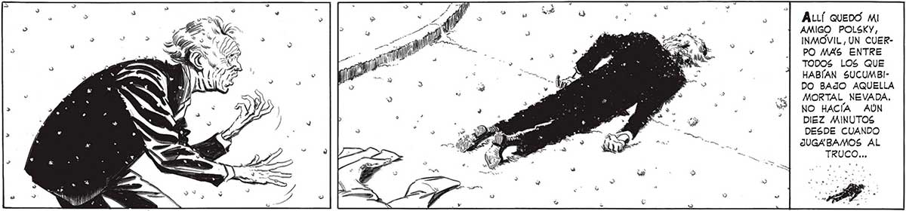
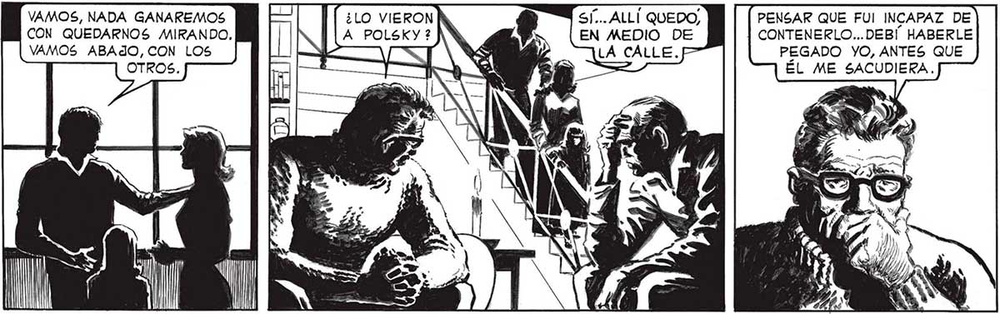
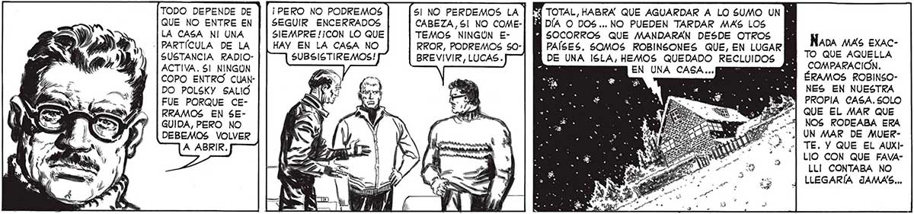

ALLÍ QUEDO MI AMIGO POLSKY, INMÓVIL , UN CUERPO MAS ENTRE TODOS LOS£ QUE HABIAN SUCUMBIDO BAJO AQUELLA MORTAL NEVADA. NO HACÍA AUN DIEZ MINUTOS DESDE CUANDO JUGABAMOS AL TRUCO... VAMOS, NADA GANAREMOS SÍ... ALLÍ QUEDO, CON QUEDARNOS MIRANDO, EN MEDIO DE PENSAR QUE FUI INCAPAZ DE CONTENERLO...DEBI HABERLE PEGADO YO, ANTES QUE ES INÚTIL LAMENTARSE AHORA, FAVA ... TENEMOS DICES BIEN. ESTAMOS VIVAMOS ABAJO, CON LOS Y TODO DEPENDE DE QUE NO ENTRE EN LA CASA NI UNA -|PARTÍCULA DE LA SUSTANCIA RADIOACTIVA. Sl NINGUN COPO ENTRO CUANDO POLSKY SALIÓ FUE PORQUE CERRAMOS EN SEGUIDA, PERO NO DEBEMOS VOLVER ¡PERO NO PODREMOS SEGUIR ENCERRADOS SIEMPRE /¡CON LO QUE HAY EN LA CASA NO SUBSISTIREMOS! Sl NO PERDEMOS LA | CABEZA, 61 NO COMETEMOS NINGUN ERROR, PODREMOS S0BREVIVIR, LUCAS. ÉL ME SACUDIERA. TROS. Y TOTAL, HABRA QUE AGUARDAR A LO SUMO UN pp A DÍA O DOS... NO PUEDEN TARDAR MAS LOS PAÍSES. SOMOS ROBINSONES QUE, EN LUGAR Í DE UNA ISLA, HEMOS QUEDADO RECLUIDOS E , E EN UNA CASA... NEC A A e QUE PENSAR EN NOSOVOS POCO MENOS QUE POR MILAGRO. Nana MAS EXACTO QUE AQUELLA COMPARACIÓN. Í ERAMOS ROBINSONES EN NUESTRA PROPIA CASA. SOLO | QUE EL MAR QUE NOS RODEABA ERA UN MAR DE MUERTE. Y QUE EL AUXILIO CON QUE FAVALLI CONTABA NO LLEGARÍA JAMAS...


